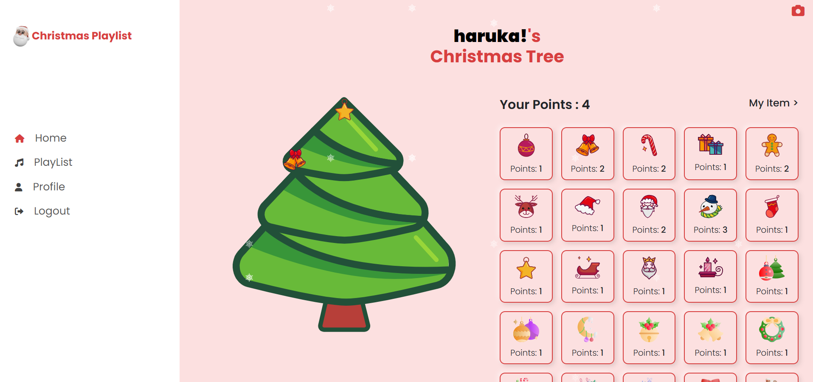

Full Stack Christmas Tree Decolation with Music Web App
Objective: to create an app which is playful and provides users festive atomosphear.
Main feature: Once user register their account, they can listen music and earn points. Using points, they can get items to decolate their own christmas tree. Administrator can upload/delete edit songs, items.
#React
#PHP
#team project
#web app
#SPA


 LinkedIn
LinkedIn